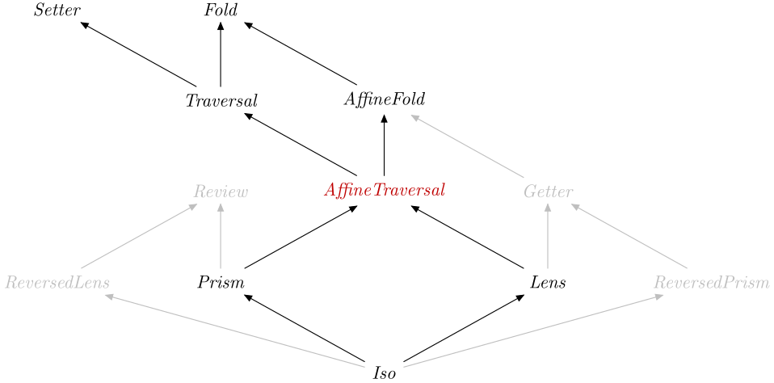

| Safe Haskell | Safe-Inferred |
|---|---|
| Language | Haskell2010 |
Optics.AffineTraversal
Description
An AffineTraversal is a Traversal that
applies to at most one element.
These arise most frequently as the composition of a
Lens with a Prism.
Synopsis
- type AffineTraversal s t a b = Optic An_AffineTraversal NoIx s t a b
- type AffineTraversal' s a = Optic' An_AffineTraversal NoIx s a
- atraversal :: (s -> Either t a) -> (s -> b -> t) -> AffineTraversal s t a b
- matching :: Is k An_AffineTraversal => Optic k is s t a b -> s -> Either t a
- unsafeFiltered :: (a -> Bool) -> AffineTraversal' a a
- withAffineTraversal :: Is k An_AffineTraversal => Optic k is s t a b -> ((s -> Either t a) -> (s -> b -> t) -> r) -> r
- data An_AffineTraversal :: OpticKind
- type AffineTraversalVL s t a b = forall f. Functor f => (forall r. r -> f r) -> (a -> f b) -> s -> f t
- type AffineTraversalVL' s a = AffineTraversalVL s s a a
- atraversalVL :: AffineTraversalVL s t a b -> AffineTraversal s t a b
- atraverseOf :: (Is k An_AffineTraversal, Functor f) => Optic k is s t a b -> (forall r. r -> f r) -> (a -> f b) -> s -> f t
Formation
type AffineTraversal s t a b = Optic An_AffineTraversal NoIx s t a b Source #
Type synonym for a type-modifying affine traversal.
type AffineTraversal' s a = Optic' An_AffineTraversal NoIx s a Source #
Type synonym for a type-preserving affine traversal.
Introduction
atraversal :: (s -> Either t a) -> (s -> b -> t) -> AffineTraversal s t a b Source #
Build an affine traversal from a matcher and an updater.
If you want to build an AffineTraversal from the van Laarhoven
representation, use atraversalVL.
Elimination
An AffineTraversal is in particular an AffineFold
and a Setter, therefore you can specialise types to obtain:
preview::AffineTraversals t a b -> s -> Maybe a
over::AffineTraversals t a b -> (a -> b) -> s -> tset::AffineTraversals t a b -> b -> s -> t
Computation
matching(atraversalf g) ≡ fisRight(f s) =>set(atraversalf g) b s ≡ g s b
Additional introduction forms
See _head, _tail,
_init and _last for
AffineTraversals for container types.
unsafeFiltered :: (a -> Bool) -> AffineTraversal' a a Source #
Filter result(s) of a traversal that don't satisfy a predicate.
Note: This is not a legal Traversal, unless you are
very careful not to invalidate the predicate on the target.
As a counter example, consider that given evens =
the second unsafeFiltered evenTraversal law is violated:
overevenssucc.overevenssucc/=overevens (succ.succ)
So, in order for this to qualify as a legal Traversal you
can only use it for actions that preserve the result of the predicate!
For a safe variant see indices (or
filtered for read-only optics).
Additional elimination forms
withAffineTraversal :: Is k An_AffineTraversal => Optic k is s t a b -> ((s -> Either t a) -> (s -> b -> t) -> r) -> r Source #
Work with an affine traversal as a matcher and an updater.
Subtyping
data An_AffineTraversal :: OpticKind Source #
Tag for an affine traversal.
Instances

van Laarhoven encoding
type AffineTraversalVL s t a b = forall f. Functor f => (forall r. r -> f r) -> (a -> f b) -> s -> f t Source #
Type synonym for a type-modifying van Laarhoven affine traversal.
Note: this isn't exactly van Laarhoven representation as there is
no Pointed class (which would be a superclass of Applicative
that contains pure but not <*>). You can interpret the first
argument as a dictionary of Pointed that supplies the point
function (i.e. the implementation of pure).
A TraversalVL has Applicative available and
hence can combine the effects arising from multiple elements using
<*>. In contrast, an AffineTraversalVL has no way to combine
effects from multiple elements, so it must act on at most one
element. (It can act on none at all thanks to the availability of
point.)
type AffineTraversalVL' s a = AffineTraversalVL s s a a Source #
Type synonym for a type-preserving van Laarhoven affine traversal.
atraversalVL :: AffineTraversalVL s t a b -> AffineTraversal s t a b Source #
Build an affine traversal from the van Laarhoven representation.
Example:
>>>:{azSnd = atraversalVL $ \point f ab@(a, b) -> if a >= 'a' && a <= 'z' then (a, ) <$> f b else point ab :}
>>>preview azSnd ('a', "Hi")Just "Hi"
>>>preview azSnd ('@', "Hi")Nothing
>>>over azSnd (++ "!!!") ('f', "Hi")('f',"Hi!!!")
>>>set azSnd "Bye" ('Y', "Hi")('Y',"Hi")
atraverseOf :: (Is k An_AffineTraversal, Functor f) => Optic k is s t a b -> (forall r. r -> f r) -> (a -> f b) -> s -> f t Source #
Traverse over the target of an AffineTraversal and compute a
Functor-based answer.
Since: 0.3